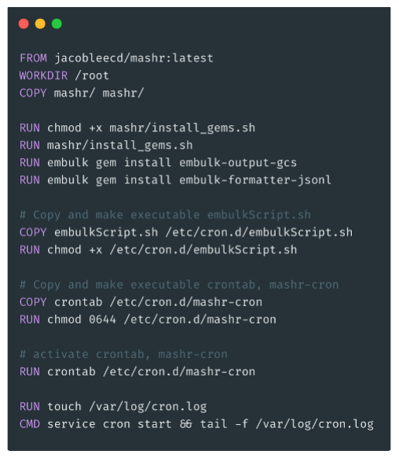
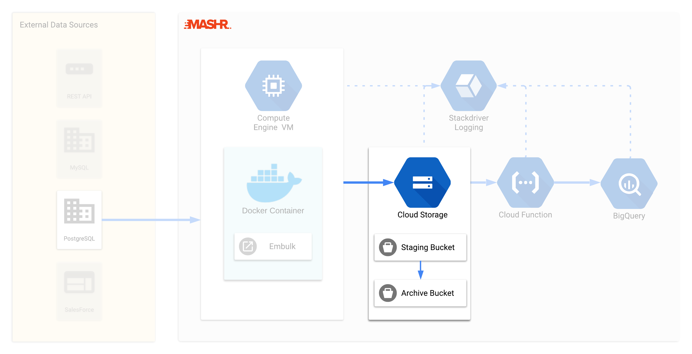
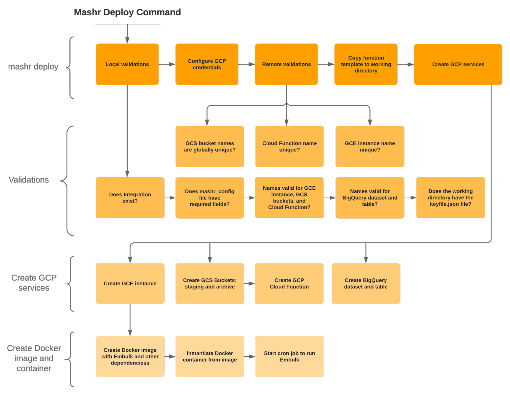

Automate your Data Pipeline
In today’s world even small applications use a variety of tools to get the job done. Mashr simplifies the process of getting data from all of those tools into a single place so that you can use it.
a data pipeline framework built for the cloud
In today’s world even small applications use a variety of tools to get the job done. Mashr simplifies the process of getting data from all of those tools into a single place so that you can use it.
Mashr is optimized for data pipeline best practices including monitoring, archiving and backup in case of failover.
Mashr is an open source easy-to-use data pipeline orchestration and monitoring framework for small applications. Mashr simplifies the process of taking your data from disparate sources and putting them into a single place so that you can use that data. It is optimized for data pipeline best practices including monitoring for each step of your data pipeline along with archiving and backup in case of failover. Mashr is built with Node.js, provides an easy-to-use CLI, and uses Docker to host Embulk on GCE Instances on Google Cloud Platform (GCP).
In today’s world even small applications use a variety of tools to get the job done. It’s reasonable to assume that a small application would have data in over a dozen sources including email applications, ecommerce platforms, and more. Without a data pipeline that transfers data from multiple sources to a central repository, it can be difficult to perform analysis and make sound business decisions.
Cloud platforms give the promise of easy-to-use solutions to answer problems like this. The irony, however, is that cloud platforms can often still be cumbersome to use and offer an overwhelming array of choices that can make life difficult for a developer. Mashr was built to simplify the process of deploying data pipelines in the cloud so that developers can focus on building their application and not the data pipeline.
This case study will begin by describing some of the best practices for building a data pipeline, as well as the challenges that developers face in building their own. Next we’ll talk about some of the existing solutions that solve this problem, and why we built Mashr to address some of the drawbacks of those solutions. Finally, we’ll discuss the design questions we made while building Mashr and some of the unique challenges that came up along the way.
Although we’d like for Mashr to support other cloud providers in the future, Mashr currently only supports setting up a data pipeline on GCP. GCP is by no means the only cloud provider in existence. We decided to start with implementing Mashr to build a data pipeline on GCP because of its robust set of tools for data analysis. In comparing the tools for big data analytics between Google’s GCP and Amazon’s AWS, GCP has an edge due to their varied range of services, including Tensorflow which is one of the most used Machine Learning libraries 3.
In order to understand why we need data pipelines in the first place, let’s consider a scenario. Imagine a small web application called “Bookend” that sells used books to a niche market. Bookend has sales data from their ecommerce platform, sales data from Amazon, and email data from MailChimp.
Bookend wants to know how many emails were opened and how “opens” affected sales on their two sales platforms. This means that they need to get all of these different data sources together into a single destination to perform analysis on it. In addition, Bookend doesn’t just want to do this once. They need to do it every day so that they can understand how well their email marketing is working over time. That means that they need an automated solution that can take data from these different sources and combine them into a single destination.
At first, it may look like their use case is simple and they could just build a small application that makes API calls regularly to get data into a single destination database where they can do reporting:
Unfortunately, they need a little more than this simple diagram:
Lastly, Bookend is a small but growing application and they will want to add new sources of data in the future. For instance, they might begin selling on another ecommerce platform like eBay, or use a different mail provider or add a text messaging system. Therefore they would like an easy way to add new integrations as needed without a lot of overhead.
After considering those features, the diagram of what they want looks more like this:
Data pipeline tools and services exist to address just this kind of scenario. As you can see, if Bookend started their journey knowing only that they needed a data pipeline, they would quickly be confronted with a number of design decisions. This is why there is a large ecosystem of tools and platforms that perform data pipeline services. The range of these tools is vast. For instance, you have everything from Apache Airflow 7 which is an open source workflow management system, to Stitch 8, a proprietary solution with an easy-to-use drag-and-drop UI.
In order to better understand why there is such a large array of tools out there and what design decisions Bookend would face, let’s consider what some of the principles are of a good data pipeline for their use case.
While it may sound self-evident, we should first think about how we pull data from the source. Data may come in many different formats including XML, JSON, CSV, etc. Your application will need to change the data into a format that the destination database can read. To do these things the application will have to live somewhere, so you will have to consider where you host it. You’ll also have to consider how you schedule the extraction of data at a regular interval. For instance, you could schedule extraction from a cron job or another tool.
Oftentimes we will want to perform some kind of validation on the data before it reaches our destination database. Specifically, we would want to ensure that the data was not corrupted in the source, corrupted by the data pipeline itself, and that no data was dropped in the previous steps before loading the data into the destination.
For instance, imagine that one of the sources of data was a database with financial transactions from the past year. We may want to make sure that there is a date field and that this field has valid dates within the past 12 months.
Validation can be an important concern because for many destination databases, if you try to load data that is different than what the destination expects, the load job may fail.
More often than not we will want to perform some sort of transformation on the data 1. This could look like a lot of different things. For example:
For example, we would want to encode free-form values if the source has a field “male” that we want to map to “M” in the destination. We would want to translate coded values if the source codes female as “1” and the destination codes female as “F”. There are many more transformations that you may need to do before data reaches the destination database.
As we mentioned above, the load job will fail with many databases if you try to load data in the wrong format. You will need to consider what to do with your data if the data fails to load to the destination database. One solution is to not load data directly into the destination database. Instead, the data should first enter a staging area. We then attempt to perform a load job from this staging location. The data could then be archived if the load job is successful, and held in the staging area if the load job fails. If we keep an archive of the data, our data pipeline can be more resilient to failover and we can make it easier to rollback if something goes wrong. In addition to handling errors, we can use the archive and staging locations to generate audit reports or diagnose and repair problems.
Because load jobs are not always successful and data can become corrupted, we need an easy way to debug each step of our data pipeline. Therefore, we should have a logging service that takes account of:
Ideally, if you were to see data corrupted in your destination database then you should have a method to review every step of you data pipeline to see where the corruption occurred.
Another area that appears self-evident but in fact has hidden complexity is the actual method by which you load data into the destination. For example, some systems like fraud detection may require data to be handled in real-time or near real-time. For this reason, many cloud providers offer a “streaming” method to load data into their databases in addition to a “batch” loading method. There are tradeoffs for either including financial cost and setup that you may need to consider.
A common source of problems in a data pipeline is that there can be a large number of dependent tasks. In this example, “B” should not start without “A” completing, then “C” and “D” depend on a condition in “B”. A data pipeline should be able to have a simple way to ensure that these kinds of dependencies are easy to organize, and has mechanisms to ensure the successful completion of complex tasks.
Finally, a data pipeline should consider constraints on performance and we should make any optimizations where possible. This is especially true when dealing with a large volume or frequency of data transfer.
For example, many data pipelines may make use of parallel processing. A simple example of this would be taking one large file and splitting it up into many smaller files that are processed at the same time.
You should also examine your data pipeline for bottlenecks. These frequently occur in two areas:
Once you’ve thought through which of these features your data pipeline will implement and how it will implement them, you’ll then want to consider in what order your data pipeline flows. There are two specific subsets of data pipelines that you may hear about.
The first subset is ETL, which stands for “Extract, Transform, Load”. This follows the traditional flow of data for most data pipelines. Due to the cost of storing data, you would want to perform any transformations that reduce the amount of data before loading it to the destination database 6. For instance you may want to perform aggregations on the data or another step that would reduce the amount of data before loading.
The other subset is ELT, which stands for “Extract, Load, Transform”. With the advent of cloud platforms like Google Cloud Platform and AWS, the cost of storing data is much cheaper and therefore is no longer as great a concern 6. Therefore, transformations like aggregation can occur after we store data.
After reviewing the principles of a good data pipeline for our use case, we can see that there are four major components of a data pipeline from an infrastructure perspective:
We have already shown that there are actually a lot of principles and decision points to consider when building a data pipeline solution that automatically transfers data from one place to another. However, to gain an even deeper understanding of the challenges of building a data pipeline, let’s briefly explore what it takes to set up a data pipeline on Google Cloud Platform (GCP).
Setting up a data pipeline on GCP can be a complicated and challenging task because of the large number of services that are offered that may be relevant for setting up a data pipeline. For example, some of the services that are currently offered are GCP’s Data Transfer Service, DataFlow, Cloud Functions, Cloud Run, and so much more. Additionally, new products come out almost every day, and existing products are changed frequently. It starts to get overwhelming quick.
After deciding which services to use, the developer still has a lot of work to do before being competent in using those resources. As an example, this table shows a count of how many API calls and GCP services that Mashr manages in GCP to set up a data pipeline. A developer setting out to create their own data pipeline would need to be familiar with each of these services and the configuration options available to each service. This table also doesn’t mention the countless validations as well as the setup required for logging and other helpful tools that Mashr provides.
Also, some of the client libraries for communicating with GCP resources may not be complete. For instance, there is no node.js client library to manage cloud functions at the time of this writing 11.
Finally, there is rarely a single task that doesn’t involve a series of smaller tasks. For instance, creating a virtual machine instance on the cloud with GCP requires you to also determine what OS you need and how much memory it should have 10. As another example, setting up a Google Cloud Storage Bucket requires you to determine which Storage Class to use 9.
Due to the complexity of setting up a data pipeline on your own, there are many solutions currently in existence that seek to ease the process.
First, there are “hosted” solutions, which are either fully or partially proprietary solutions that abstract away server setup and deploys an entire data pipeline for you.
Most of these services provide a graphical interface and plug-and-play functionality. They range from enterprise grade services like Informatica PowerCenter that can cost 6 figures, to tools such as Stitch and FiveTran which provide affordable tiers to small and medium sized companies.
There are several good reasons to go with a hosted solution:
There are also some downsides:
The second group of solutions are "self-hosted" solutions. These are open source tools which allow you to implement your own data pipeline. These solutions don’t handle hosting for you and require more configuration. Unfortunately, many of these solutions are unmaintained.
As an example, one of the surviving and most successful of these open source platforms is Pentaho Data Integration (PDI) 12 which integrates with over 300 services. PDI's graphical interface can be used to develop a simple ETL data pipeline to have steps for extraction, transformation, and loading.
The pros of self-hosted solutions are:
The downside to using a self-hosted solution is that their customizability comes at a cost—both financially and in terms of time:
Recall that Mashr is built for small applications that have data spread out over a variety of data sources such as a psql database, salesforce, or other applications with REST API’s. Developers for the small application want to combine all of that data into one place so they can use it.
Since the users in our scenario are developers, they would also like the ability to customize the code if needed. For example, they may want to add their own transformation or validation steps. Additionally, if the solution doesn’t come with an integration for a particular source, they’d like the ability to create it.
Using a self-hosted solution sounds better since it is customizable, and already partially implemented. However these solutions usually don’t account for the hosting, scheduling, monitoring, or failover necessary in a production environment. They still take a lot of time to set up hosting and to make all of the orchestration decisions.
This is where Mashr fits in—Mashr’s goal is to provide all the extraction, transformation, and loading functionality a small application needs, while being customizable and simple for a developer to deploy. Mashr does all of this while also taking into account the best practices for setting up a data pipeline.
By “abstracted” in the image above we mean how much of the hosting, management and configuration a user has to worry about.
Mashr sits somewhere in the middle. It is less abstracted than a hosted solution, and more abstracted than a self-hosted solution. Mashr makes decisions for the user about the scheduling and running of jobs, how to recover data that fails to load, or where to archive data for future reference.
Similarly with “customizability”, Mashr is positioned between hosted and self-hosted solutions. Since Mashr is open source, a user can alter the code when necessary.
Hosted solutions are closed systems that have limited customizability. At the same time, since Mashr has more functionality built-in than many self-hosted options, it’s less customizable compared to typical self-hosted solutions. Those solutions leave hosting and orchestration details up to the user to customize themselves.
The pros for using Mashr include:
The cons for using Mashr are that:

Mashr was made to be an easy-to-use framework with just a few commands so that developers can get started quickly building their own data pipelines. Below are the main commands with a brief description:
init
- creates a YAML configuration file in the users working
directory
deploy
- launches all of the GCP resources to create the data pipeline
destroy
- destroys all of the GCP resources of a specific data pipeline
list
- lists your current data pipelines
help
- help text for Mashr
The workflow for a developer looks like this:
mashr init
which sets up the user’s current working directory as a mashr
directory. It would create a mashr_config.yml file in
the user’s current working directory.
mashr_config.yml file
to tell Mashr what data source it will be pulling from and what
BigQuery dataset and table the data should go to.
mashr deploy, this
launches all of the resources needed.
mashr destroy will take down
all those resources.
Before going into detail about the data pipeline that Mashr deploys and what these commands do behind the scenes, it’s important to understand the tools and GCP services that Mashr uses.
When Mashr deploys to GCP it makes use of a number of services, shown in the table above. Readers may already be familiar with AWS’s cloud services, so we’ll name the equivalent service on AWS to help build a frame of reference.
GCE is the Infrastructure-as-a-Service (IaaS) component of GCP. A GCE Instance is a virtual machine. If you’re familiar with AWS this is similar to an EC2 instance.
GCS is a data storage service similar to AWS’s S3. GCS users create “buckets” to store data. Each bucket can have different settings that affect the speed and price of the storage. For example Mashr uses both “Multi-Regional” and “Coldline” storage. Multi-Regional is faster but more expensive than Coldline storage.
Cloud Functions are GCP’s implementation of a Function-as-a-Service (FaaS) platform, similar to AWS Lambda. It executes custom code on fully-managed servers in response to event triggers. Since the servers are fully managed, this removes the work needed to manage the infrastructure that the code runs on.
BigQuery is GCP’s data warehouse, similar to AWS’s Redshift. BigQuery enables interactive analysis of massively large datasets. It is an analytical engine that provides online analytical processing (OLAP) performance.
Stackdriver is GCP’s logging service, similar to AWS’s CloudTrail or CloudWatch. Stackdriver aggregates metrics, logs, and events from cloud and on-premises infrastructure. Developers can use this data to quickly pinpoint causes of issues across a system of services on GCP.
One key component in a robust data pipeline is the data extraction component, which is the component that's responsible for managing the scheduling and extraction of data from the source. Mashr uses Embulk 13 as part of its default data extraction component, and we'll spend this section understanding why we use Embulk, what it is, and how Mashr uses it.
When building Mashr, we first considered how users would supply data to the pipeline without having to write a lot of code. We wanted something modular and easy to use. There were several options we looked at. We decided on Embulk because it has a large open source community and well maintained code base.
In many ways Embulk fits into the category of ‘self-hosted’ solutions that we talked about earlier. It is a plugin-based tool that can extract and load data to and from many sources, but does not manage archiving, backup, monitoring or scheduling and hosting for the user.
By “plugin-based”, we mean that a user can choose from a variety of existing plugins for their input and output data sources. For instance, Embulk features plugins for REST APIs, relational and nosql databases. A developer can also build their own plugins if there is not an existing one for their data source.
You download Embulk as a JRuby application. Then you can download
various gems (dependencies) which are the input and output plugins that
allow you to transfer data from one service to another. Embulk allows
input and output plugins to communicate with each other via Ruby objects
in a standard format so that any input data source can talk to any
output destination. Embulk takes an embulk_config.yml file
that specifies the input and output for a specific Embulk job, and then
that Embulk job can be run in the terminal with the command
embulk run embulk_config.yml.
As mentioned above, Mashr uses Embulk as the data extraction component of the data pipeline it creates on GCP.
Mashr requires that a user completes a mashr_config.yml
file before deploying the data pipeline to GCP. This
mashr_config.yml file specifies several values that Mashr
needs to build the data pipeline on GCP, as well as values that Embulk
will need to extract data from the source.
For instance, the mashr_config.yml file allows the user
to specify what dependencies (plugins) are needed to run Embulk for a
particular job, and what run command will be used when the
Embulk job is run. There are different commands to run an Embulk job
depending on your use case. Two run commands
that are important to know are:
embulk run config.yml
- Runs an embulk job
embulk run config.yml -c diff.yml
- Runs an embulk job with incremental loading
An “incremental load job” in Embulk is a job that tracks what data has been loaded to prevent sending values that have already been loaded to the destination. To do this, Embulk will create a second YAML file that keeps track of the last values loaded.
In this example embulk yaml file, you can see that the value for
incremental is set to true, and that the
columns that Embulk will track for incremental loading are
created_at and id. When we run this job with
the command embulk run config.yml -c
diff.yml, Embulk will create a separate diff.yml
file that keeps track of the last values of created_at and
id that have been loaded. Embulk will then check those
values the next time embulk run config.yml -c
diff.yml runs.
Finally, Mashr uses the input data source that the user specified in
the mashr_config.yml file to create a new
embulk_config.yml file with the output set to a GCS bucket.
We’ll explain why the GCS bucket is the destination later on. Here’s an
example of the embulk_config.yml file that Mashr
generates:
We’ll discuss more about how this works on section 4.4.1 when we talk
about the command mashr init.
Now that we have a basic understanding of the GCP services and
tools that Mashr uses, let’s talk about what Mashr does and how it was
built. This diagram shows a high-level overview of Mashr’s main
components. When you run mashr deploy in
your terminal, the following actions take place:
Mashr sets up a GCE instance, with Embulk running on a Docker container. The container has a cron job running that pulls data from the source and loads it into Google Cloud Storage. Adding the data to GCS triggers the Cloud Function. The Cloud Function attempts to load the data into BigQuery. If the load is successful, the Cloud Function moves the data file from the staging bucket to the archive bucket. If the load is not successful, the data file remains in the staging bucket for debugging purposes. Each step of this process has Stackdriver monitoring enabled so users can debug the data pipeline if necessary.
Let’s dive into the components of Mashr so we can break down each step described above. We’ll start by talking about Embulk and the GCE instance it is hosted on.
The data extraction component needs to be hosted somewhere. We considered using a Cloud Function, but this wouldn’t work for two reasons. First, Embulk is written in a runtime that is unsupported by Cloud Functions. Second, we needed to persist data between runs to track the most recent record extracted, however Cloud Functions are ephemeral and therefore do not persist data between runs on their own.
We decided it made sense to use a GCE instance to host Embulk, which allows us maximal flexibility and the ability to persist data between jobs.
Hosting on a GCE Instance raised the concern of OS dependency. For instance, GCP recently discontinued support for GCE instances running Debian 8. Over time, as VMs evolve and older versions are dropped from the GCE library, Mashr may break and need to be reconfigured to run on new OSs. It’s fine to upgrade over time, but we want to do upgrades on our terms rather than be forced to update on someone else’s schedule. So we put Embulk in a Docker container to make the application resilient to technology changes. We’ll discuss this process in more detail in section 5.
We built a custom Docker image that creates a container with several features and customizations depending on each particular integration’s configuration. For instance, each container will need different Embulk plugins installed and different Embulk run commands depending on the user’s needs.
Additionally, we implemented the scheduling of Embulk jobs with a cron job that runs every 10 minutes in the Docker container. By default, containers shutdown once the main process running in the foreground ends. So we needed the container to stay up between runs. We implemented a solution to keep the container active that we’ll go into detail about in the ‘challenges’ section below.
Finally, our Docker container is configured to send logs to GCP’s Stackdriver for easier debugging and monitoring. This proved to be a little tricky, and is also explored in the ‘challenges’ section.
The Embulk job running on the GCE instance formats that data into a newline-delimited-JSON file, which works well for loading data into BigQuery. However, instead of loading the data directly into BigQuery we have an intermediary step where the data is loaded to a staging bucket in GCS. We use the GCS buckets to provide a way to debug load issues if they occur, and archive data files in case they’re needed later. We’ll explain the archiving process in more detail shortly.
When Embulk loads the data file into GCS, the Mashr Cloud Function is triggered. When the function triggers it first checks if the destination table named in the configuration file exists in the BigQuery dataset. If not, Mashr will create the table before attempting to load data.
The Mashr Cloud Function’s primary purpose is to load the data file from the GCS staging bucket into BigQuery. After a successful load, the Function moves the data file from the GCS Staging bucket into the Archive bucket. The Archive bucket uses Coldline storage so that large amounts of data can be stored cheaply. We’ll explain the purpose of the Archive bucket in the next section.
Earlier, during the deployment process on the user’s local machine, the code for this Cloud Function is generated and stored in the user’s current working directory. This enables users to make customizations to it if desired. For example, they could implement customized data transformations or validations.
Throughout the process, the logs from the Cloud Function are also sent to Stackdriver so the user can easily debug if necessary.
This brings us to how Mashr handles a failing load job and what the Archive bucket is for. As previously stated, when the load job is successful the Cloud Function moves the data file from the Staging to the Archiving bucket for long term storage. However, if the data fails to load to BigQuery, the Cloud Function leaves the file in the Staging bucket. This way a user can easily find data files that were not loaded into BigQuery and investigate the cause. For example, if a new field was added to the data, BigQuery will reject the load. Once the user identifies the issue they can fix the problem and then load the data themselves.
In order to understand how much work Mashr is doing for the
developer, let's explore what each command is doing behind the scenes,
starting with init.
When you run init a template YAML configuration file
is created in your working directory called
mashr_config.yml. You can see that it instructs the user
to fill out the template before running
mashr deploy:
In this example you can see that we’ve run init and
Mashr created a mashr_config.yml template file in the
user’s current working directory.
If you pass the --template flag to init,
you can specify some different templates for various input data sources
that Mashr has available, including psql and
http. This example is of an http template.
In the actual templates that are generated there are helpful comments
in each section that explain what to input and how Mashr will use it.
The user then only has to fill in the details and run mashr
deploy, and Mashr will do the heavy lifting of setting up your
data pipeline.
This is the example mashr_config.yml file after the
user has filled it out. The first section at the top,
mashr, is where the user specifies their GCP credentials
along with the table and dataset to send data to. Additionally, the
user specifies an integration_name. The
integration_name is what Mashr uses to name the GCS
buckets, the GCE Instance and the Cloud Function. This way, the user
can find them easily in GCP’s console if needed.
Also in the mashr section, the user can specify what
command to run Embulk with, and any dependencies or gems that this
integration needs to run. These will be used later when we set up the
Docker container with Embulk running on it inside the GCE instance.
Everything inside the embulk section specifies what
the input should be. You can see that the user has specified an input
type of http and the url to get from.
After filling out the mashr_config.yml file, the user
runs mashr deploy from the same directory,
and Mashr will launch all the resources necessary in GCP to create the
data pipeline.
Deploy does a lot of work for you in the background. As a broad overview, deploy performs these steps:
integration_name, table name and dataset name fit
GCP’s naming conventions.
Here is a diagram showing some of those major steps.

Finally, if you want to take down all of those resources you can
run mashr destroy. We considered a scenario where
a user may have already deleted a resources before running
mashr destroy, and therefore if a GCP
resource doesn’t exist Mashr will only throw a warning while attempting
to destroy GCP resources that don’t exist.
To recap, the principles of a good data pipeline include the following:
Mashr makes it easy to deploy a data pipeline with best practices considered:
The process of designing and building Mashr came with many challenges. We’ll review some of the most interesting challenges below.
The first challenge was that Mashr launches Docker containers in a non-standard way. We knew we wanted to host Embulk on Docker in our GCE instance. However, each container for each integration would have a different state because the files and command that Embulk would use to run a particular job or integration would be different based on what input the user supplied in the mashr configuration file. For example, the dependencies that Embulk needs to run a particular input job are dependent on what type of input the user wants (e.g., REST api or psql database). Therefore that we can’t just host an image on Docker Hub that we pull every time we create a GCE instance for an integration. Instead we have to build the image on the fly inside the GCE instance. This meant that we have to dynamically generate the files that the container uses, copy them to the GCE instance, and then copy those files into the Docker container as its being built.
We do that in a couple of steps:
mashr_config.yml file into those template file
strings.
Another issue that we ran into was that Embulk doesn’t have its own built-in clock to schedule jobs, so we needed to find a way to schedule the Embulk jobs to run at a regular interval.
Our options to do this were either:
Because running a cron job on the virtual machine is one more dependency on the type of OS that we don’t want to include, we can quickly discount that option.
Running a cron job in a separate container made some sense to us because it would be following the principle that each specific service has its own Docker container. Also, using Cloud Scheduler is appealing for the same reason—it allows us to separate concerns and have a dedicated fully managed service for a particular task.
However, we felt like both of those options added additional complexity that didn’t make sense for our use case. Therefore we decided that in this particular instance, it was reasonable for our Docker container to both manage the running of Embulk jobs and the scheduling of those jobs. Therefore we went with option (d), a cron job running inside the same docker container that runs the Embulk job.
However, choosing to run the cron job inside the Docker container raised an additional concern. To have a cron job running on a Docker container requires that the container is always active and never shuts down. A Docker container runs as long as a process is running inside of it.
In order to accomplish this, the last command in our Dockerfile is a
tail -f command which watches a particular file
indefinitely. This keeps the container running in the background.
Additionally, our run command used to start the container
has a “restart” policy of true. This ensures that if for any reason the
container is stopped that it will restart on its own.

It was important to us that users had an easy way to see the logs for every step of the process. This included what events occurred, errors if there were any, and data that was transferred between steps. Since Mashr uses GCP it makes sense that we use GCP’s logging service, 'Stackdriver'. Stackdriver is a great logging tool that aggregates each GCP project’s logs, metrics and events into a single filterable dashboard. Therefore for each step of our data pipeline—the Embulk GCE Instance, the buckets and the function—we had to ensure that logs were properly sent to Stackdriver.
Prior to the configuration of sending the Docker logs to Stackdriver,
if there were any errors on an Embulk cron job the user wouldn’t have a
way of knowing that an error occurred without actually going into the
Docker container. To do this they would have to SSH into the GCE
Instance, exec into the Docker container, find where the
logs are stored, and then output them to stdout for viewing.
Therefore we had to find a way of getting the stderr
and stdout of our Embulk cron jobs running inside a docker
container in the GCE Instance, into Stackdriver.
We used Docker’s logging driver for GCP to accomplish this. There is
an option to use the GCP logging driver in the run command or in a
configuration file for Docker called daemon.json. Docker
will then detect your credentials from inside the GCE Instance and will
send logs to Stackdriver for you.
However, normally cron logs would not be captured by Docker’s logging
service by default. You have to send the logs to a specific process that
Docker listens to. Ultimately we were able to accomplish this by running
the command for the cron job with >> /proc/1/fd/1 2>&1.
This appends the stdout and stderr of the
command preceding it to the process that Docker is watching.
A software engineering project is never actually complete, and the same can be said for Mashr. Below are ideas to further improve the Mashr project.
Some of the things that we’d like to include in the future are:
redeploy command that allows users to overwrite existing
integrations.
We are looking for opportunities. If you liked what you saw and want to talk more, please reach out!

San Jose, CA


Los Angeles, CA

Portland, OR